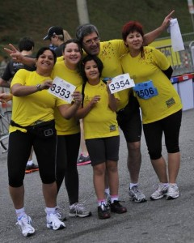
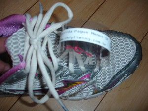
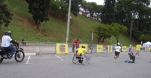
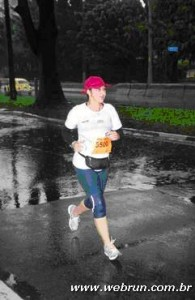
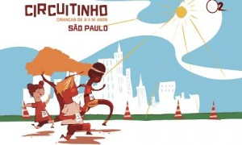
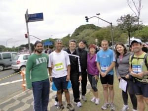
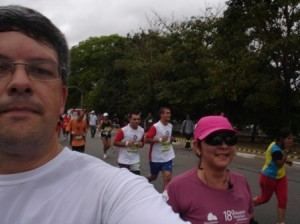
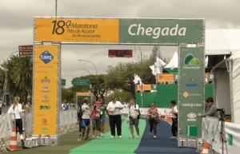

vamo, vamo, vamo…
Ana Shibata
Sou advogada, mãe, esposa, amiga, companheira. Há algum tempo pretendia sair do sedentarismo e assim foi com aulas de yoga, depois academia para baixar o colesterol e numa inscrição para uma corrida feminina feita mais pelo kit (sem nunca ter corrido ou treinado) o bichinho do quero mais me pegou e, agora trilho por este caminho tendo como mantra "Mens sana in corpore sano".
Home page: http://urbi-orbi-trek.blogspot.com/
Posts by Ana Shibata
Resultado da reavaliação do ortopedista
77 years
by Ana Shibata
in Ex-sedentário

Depois do acidente fiquei literalmente de molho lendo e assistindo alguns programas de TV. A muleta que me emprestaram era tamanho G o que deixou alguns hematomas embaixo do braço, enfim, nesta fase tudo faz parte.
Na quarta meu tornozelo ainda estava inchado. Tratei de marcar ortopedista rapidamente para reavaliação, ainda bem que consegui pela hora do almoço, mas se precisasse ficar plantada no consultório não haveria problemas, precisava era saber o agora - apesar de já ter rodado o Dr. Google, restava a ressonância magnética para saber o estado do tornozelo e somente com esse resultado saberíamos a extensão da lesão.
Realmente, foi pedido RM e também foi explicado que dependendo da extensão seria solicitado fisioterapia, mas tudo depois da RM, foi trocado o antiinflamatório e usar imediatamente Robofoot ( uma bota monstrenga mais paracido ROBOCOP! — ah, a da fotinho) para ficar com o pé num ângulo de 90º, gelo e continuar com o repouso e perna para o alto.
Ainda bem que moro em Sampa onde a cidade não para e consegui marcar a RM para o mesmo dia as 23 hs (uma clínica que trabalha 24 hs, bárbaro demais esse tipo de atendimento). Fiz a RM e pedi urgência na entrega do resultado para retorno a ortopedista.
Agora novo embate, se ficar em repouso absoluto com a perna elevada calçando o bendito robofoot já era um transtorno, não há idéia de como seja dormir com ele!! Preguei os olhos de sono e cansaço. Acordei cedo e fiquei na expectativa do dia passar. Um pouco antes do meio-dia fiquei logada no site da clínica aguardando o laudo da RM, e também liguei para reforçar o pedido de urgência, obtendo a confirmação de que sairia logo, naquela tarde seria entregue o laudo e imagens.
O resultado saiu na internet, li e fui procurar o verdadeiro significado dos termos técnicos na internet. Um pouco antes disso, através de e-mail solicitei a ortopedista agendamento do retorno para hoje (05/11) e ela gentilmente respondeu que poderia me encaixar e determinou o horário (na Era da globalização, da tecnologia, as trocas de e-mails, quando é utilizada torna a vida bem mais prática, sem necessidade de telefonar, falar com recepcionista que perguntará ao profissional e depois retornará o chamado ou precisaremos ligar cobrando uma resposta), este canal instantâneo de comunicação já tínhamos estabelecido, AGORA, de posse do laudo, lido e relido, enviei e-mail para a orto e dizendo o que realmente estava sentindo: “Dra., estou angustiada, segue abaixo o resultado do laudo: – copiei – ”, não demorou muito a resposta, se eu poderia encontrá-la a tarde.
Eu não queria acreditar no que li e ouvi sobre a tradução do laudo que uma amiga minha médica havia feito a meu pedido, agora a solicitação de ir ao hospital ainda naquela tarde fez meu mundo cair……. respondi que sim e que faltava apenas a imagem……. aguardei a resposta e como demorou liguei para o hospital, recebi a confirmação de que ela estaria clinicando, rapidamente me vesti, pedi a Melinha aos prantos para ir buscar o resultado e me encontrar no hospital.
Indo para o hospital meu coração batia mais rápido do que o de uma lebre tentando se salvar para não ser caçada…….. minha amiga aqui do condomínio me acompanhou, tentou desviar meus pensamentos…, eu ligando para Melinha para saber onde estava e depois de vários transtornos sobre a entrega do resultado Melinha já estava a caminho. Chegada minha hora a orto me chama e falou sobre ter lido o laudo, me tranqüilizou e explicou os procedimentos, respondeu minhas indagações, enfim, afastou todo aquele monstro que eu havia pintado em minha mente……… já estava mais calma, Melinha entra na sala, a orto examina as imagens, mostra o que aconteceu……..
Enfim, rompi um ligamento do tornozelo e outro rompimento parcial de alto grau, mostrou-me que estou com água perto das lesões e que se eu não tivesse colocado gelo de imediato e deixado a perna elevada o estrago seria maior, recomendou fisioterapia para a inflamação, não pisar no chão e para isso devo fazer uso de muletas, posso fazer aplicação de bolsa de gelo várias vezes ao dia, utilizar emplasto, gel antiinflamatório e retorno em 3 semanas.
Depois talvez ela possa liberar alguma atividade física, mas corrida ou esporte que possa sobrecarregar os pés somente no final do tratamento que não sabemos ainda quando será porque tudo dependerá de como meu organismo reagirá a tudo isso e em quanto tempo.
Voltei para casa super aliviada, porque cirurgia só se realmente for necessário por ser invasivo e não entende ser o caso neste momento, ela aposta que o tratamento dará resultado.
Também acho, creio no poder que o nosso corpo tem de se regenerar e para isso é necessário tempo, ainda mais com a extensão da lesão sofrida.
Fico alguns dias mais em repouso e segunda devo iniciar as sessões de fisio. As corridas em que eu me inscrevi estou repassando para o noro correr em meu lugar……….
Darei um tempo ao tempo na esperança de não ser um tempo tão grande.
Bons treinos e boas corridas a todos!!!
SEM TREINOS!!!!
107 years
by Ana Shibata
in Ex-sedentário

Pensei neste feriadão prolongado em fazer uma caminhada forte e corrida em subida em Atibaia.
Após ter cumprido meu dever cívico fomos para Atibaia, o tempo estava bom e no final da tarde resolvi jogar Badminton com Sy e depois faríamos um treino com pequenos tiros na rua.
Bom, estávamos jogando badminton muito animadas há uns 30 min, rendendo até um bom suador. Avisei Syssi para evitar jogar a cestinha fora da quadra, pois tinha alguns formigueiros, cujas formigas tem uma picada tão ardida e dolorida e eu não queria ser vítima delas.
Num bate e rebate, eis que eu igual à ilustração abaixo ao tentar rebater a cestinha,
pisei em falso no beiral da quadra que tem um desnível para a grama, virei o pé direito e cai por cima!!!!!!!!!!!!! Só gritei de dor e pedi gelo para a Sy. Do jeito que cai fiquei !!! Como ela demorava em voltar para a quadra, subi mancando, tirei o tênis e tomei uma ducha fria rapidamente. Mas não consegui colocar o pé no chão……. apliquei gelo e a dor continuava intensa. Não teve jeito e pedi ao maridão para me levar ao hospital.
Até o hospital e enquanto aguardava para ser atendida fiquei com o pé para cima e com gelo no local. Fizemos Raio X, que não acusou nada e como o local estava dolorido o medico resolveu imobilizar o tornozelo por 3 dias, com repouso absoluto pelo mesmo período, receitou ainda antiinflamatório e analgésico.
Era tudo que não queria, um simples jogo na quadra causou um repouso forçado e nem sei se poderei correr no próximo final de semana………… ainda sinto dolorido o local.
Por fim……………. torci o tornozelo no Dia das Bruxas comemorado pelos americanos e ingleses, só restando um pensamento……………….. tinha Bruxa solta no meu pedaço!!!!!!!!!!!!!!!!!!!!
Estou fazendo tudo que foi recomendado pelo médico para poder voltar logo para as ruas…………. e enquanto isso estou devorando um livro que me emprestaram, aliás, estou adorando-o, cujo assunto é o oposto de minha situação atual…………. o nome do livro?! Nascido para Correr.
Boa semana e até mais…………….

Fim de outubro
127 years
by Ana Shibata
in Ex-sedentário
O final do mes de outubro chegou trazendo o segundo turno das eleições emendando com o feriadão de Finados.
Neste mes participei apenas de uma prova num verdadeiro Domingo Legal, porque corri com a família.
Foi também um mes de superação, o Alex baixando seu IMC, o Claudião e Thiago fazendo seus longões em preparo para a maratona. Ah, tivemos ainda a notícia de que a Family Ex-Sedentário será representada na SS pela Melinha, Claudião e Alex. No balanço geral, foi um mes muito produtivo.
Novembro se aproxima e com ele um calendário cheio de provas difícil até de escolher, também será a estréia do Claudião em sua primeira maratona (de Curitiba), prova em que o Thiago se fará presente e que anda sumido do blog.
Enquanto o calendário não roda, deixo alguns vídeos e texto do CR para um “time” de descontração, sendo que qualquer semelhança é mera coincidência….. 
Alongar depois de correr tem seus riscos
Já li várias vezes que alongar imediatamente antes de correr não traz vantagem alguma ao corredor, podendo até ser prejudicial. Depois da corrida o alongamento é agradável, para relaxar a musculatura, desde que seja feito sem exageros. Mas risco de dar algo errado sempre existe, como se pode ver neste vídeo.
The day after the marathon
Só quem já completou uma maratona sabe o que acontece no dia seguinte. É aquela coisa: descer escadas de costas, subir escada de lado, não conseguir se levantar depois de ficar muito tempo sentado etc. O nome do vídeo abaixo é ” O Dia Depois da Maratona” e a frase que o finaliza, em tradução livre, é algo como “Isto é para a única parte do seu corpo que não te odeia neste momento: o seu coração”. O vídeo foi produzido pela patrocinadora da maratona de Londres de 2007. Confira no link
Um bom final de semana a todos, com o voto consciente e um maravilhoso feriadão com bons treinos a todos (ou não… rs … feriado = leseira)!!!

1º. Circuito de Corridas Farmácias Pague Menos – São Paulo
117 years
by Ana Shibata
in Ex-sedentário

Para fazer as inscrições nessa corrida, evento que reúne toda a família e promove a saúde e o bem-estar em todos os sentidos, precisei pensar quem poderia correr com a Syssi o percurso de 1k já que o maridão seria compelido por livre, espontânea e forçada vontade correr 4k, percurso que eu e Melinha tínhamos escolhido.
Depois de muito pensar….. eu, meio que faceira convidei Valéria para acompanhar a Syssi num percurso super agradável. Se pensarmos 1k não assusta quem nunca praticou esporte e, depois o kit é super recheado. Valéria titubeou um pouco, mas não resistiu aos meus encantos e concordou (rs). Já tinha uma acompanhante para a Syssi, agora restava o maridão…… pois quando ele empaca, não há cristo que o remova.
O detalhe do maridão … aos poucos fui esculpindo seu psíquico e o tempo foi meu aliado…… primeiro fizemos um teste de pisada e aproveitamos para adquirir o tênis para corrida (ele detesta tênis, porque acha que esquenta o pé, então esta foi a oportunidade perfeita!); ele tem me levado nos locais das corridas que já participei; fomos ao Parque Vila Lobos comemorar o niver do Claudião onde conversamos bastante com o Enio dos Baleias que contou o quanto pesava, como emagreceu e o gosto que adquiriu pelas corridas. O maridão também participou da prova do Combate contra o Câncer no Center Norte fazendo caminhada por livre pressão minha para acompanhar Syssi num percurso de 3k (pelas fotos acho que ele curtiu bastante). Na corrida de revezamento conhecemos e conversamos um cadinho com Paulo Mota e Thiago antes da corrida e depois ele e Syssi ficaram no ponto de encontro onde também pudemos conversar com os colegas integrantes da equipe (Fabio, Samuca, Luciano, Sr. Pedro), tudo isso acho que aquilatou sua vontade de participar de uma prova, embora ele desse sempre uma desculpa de que seu joelho pinçava, pois várias foram as minhas provocações para correr.
No sábado durante o almoço eu e Melinha comentamos sobre a corrida e ele de pronto disse que não iria participar, até tentei seduzi-lo com uma bermuda dry fit que comprei para esta corrida. Sei que ele gosta de fazer charminho, então apostamos que o maridão não faria o percurso em 30 min. Eu, Melinha, Syssi e Ygor fomos buscar os kits, tal como em Salvador recheados de brindes dos patrocinadores, tendo como diferencial a entrega do chip descartável.
Enfim domingo chegou, meu rádio despertou as 5hs15min o maridão rapidamente levantou-se da cama. Eu fui para a cozinha preparar o café da manhã e acordar as meninas. Quando voltei ao quarto ele estava fazendo alongamento. Nosso café da manhã foi por revezamento, embora eu tivesse deixado as roupas ajeitadas, os documentos, a máquina fotográfica no dia ainda fiquei perdida. Logo a Valéria estaria me ligando para dizer que estava chegando a nossa morada.
Partimos então rumo ao Estádio do Pacaembu, pertinho de casa. O tempo estava nublado e sem sinal de chuva, o clima estava agradável.
Já no local do evento, enquanto eu e Melinha colocávamos o chip descartável nos tênis de Valéria, Syssi e maridão um fotógrafo de um site de corrida quase caiu por cima de nós, minutos depois suas lentes nos flagaram naquele clima de festa.
 
Aproxima-se o horário da largada, dei as recomendações a Valéria e Syssi para prestarem atenção na chamada da largada delas que deveria ser 10 minutos após a nossa, depois de concluída a prova nos aguardar. É a primeira prova delas, e em especial da Syssi que correria com adultos também, diferente das provas kids que são por baterias, não pude acompanhar esse momento dela, mas estava em boa companhia pois sempre existiu um bom entrosamento entre Val e Syssi.
Eu, maridão e Melinha posicionamos para a largada e ficou acertado de que cada um faria sua prova. Dada a largada o maridão foi embora, Melinha ficou um pouco ao meu lado e também foi, fiz minha corrida tentando correr mais do que caminhar, de cara tem uma boa descida e puxei o freio para não desembestar, no plano corria um pouco mais forte e as vezes mais fraco. Perto do viaduto da r. Gal. Olimpio da Silveira dava para ver os corredores retornando, procurei pelo maridão e não o vi, igualmente a Melinha, um pouco depois do retorno encontrei o posto de hidratação, tomei uns goles e lá fui eu pela Av. Pacaembu em direção ao estádio, olhei no relógio e percebi que poderia fazer um tempo abaixo do realizado em Salvador, e assim foram os minutos seguintes entre passadas e olho no relógio. No final da avenida tem uma curva que dá acesso a Praça Charles Miller, no meio da subidinha meu gás deu sinal de estar no fim e como tem sido nos dias de corrida ouço aquele “Mããããe” olho para meu lado direito e vejo Syssi (no meio da muvuca consigo vê-la tal qual um olhar de falcão……rs) faltam apenas poucos metros, respiro fundo e piso no tapete vermelho! O Portal acusava 31 min… !!!!!!!!!! UHUUUUUUUUUUUUUUUU……… consegui fechar esse circuito num tempo menor que o de Salvador!!!!!!!!!!
Logo depois da linha de chegada à direita pego minha medalha, recebo uma bebida isotônica, o kit de frutas e vou ao encontro de Syssi e Valeria. Chego e pergunto a elas sobre a prova, Valeria simplesmente me diz que adorou, sento-me na calçada e logo Melinha se aproxima dizendo ter visto minha chegada. Ficamos procurando o maridão, Valeria e Syssi dizem não tê-lo visto passar, temos a oportunidade de ver um cadeirante cruzar a linha de chegada – é muita emoção e, todos que por ali estavam bradaram em homenagem àquele herói.

Passavam alguns minutos cheguei a pensar que ele tinha errado o percurso e estaria fazendo talvez 8k. Não demora para o celular da Syssi tocar, era ele querendo saber de sua localização, acho que ele não ligou no meu celular imaginando que eu ainda estivesse na prova, pegamos nossas coisas e fomos ao encontro dele que estava em frente ao Estádio.
Apesar do tempo nublado os termômetros acusavam 22°C, ele com o rosto corado disse que seu tempo foi 28 min., duvidamos bastante. Melinha chegou 29 min. Valeria e Syssi disseram que fizeram em 10 min., todos estávamos felizes com a prova, o percurso e o tempo.


Diferente do que aconteceu na etapa de Salvador em que o resultado foi divulgado 3 dias após a prova e as fotos do evento não achei em site nenhum, o resultado aqui veio a galope, no cair da noite já estava no site, o tempo liquido: maridão com 00:27:35, Melinha 00:28:35, Eu 00:30:56, Syssi e Valéria 00:07:38.
Saímos dali e fomos até a cidade universitária para ver e prestigiar o noro Ygor que estaria participando da ECORUN de revezamento com seus colegas de facul em mais um domingo cheio de provas na cidade.
No final o maridão nos supreendeu, Melinha fez uma ótima prova, eu consegui baixar meu tempo, Valéria e Syssi também marcaram sua participação no Dia de Domingo!
Espero repetir o mesmo ritmo nas próximas provas.
“Esteja atento em melhora contínua: hoje melhor do que ontem, pior do que amanhã.”
link para o album de fotos:
Nova prova no circuito – Jungle Run
77 years
by Ana Shibata
in Ex-sedentário

Hoje recebi um e-mail encantador, ou melhor, fascinante, a abertura de mais uma nova corrida…….. veja como está descrita no site “ (….) primeira edição da Jungle Run no Parque Chico Mendes em Osasco oferece uma opção ecologicamente saudável para atletas que buscam novos desafios e o bem estar proporcionado pela prática de atividades esportivas em meio à natureza. A expansão da corrida cross se torna evidente na medida em que atletas de todos os níveis procuram atividades diferenciadas em locais agradáveis e em contato direto com a fauna e a flora. (..)” (grifei)
Uma corrida dentro de Sampa com características de cross. Imaginem meus olhos na tela consumindo todas as informações da prova e meus dedos ávidos para fazer a inscrição, mas um, porém, contudo, todavia freou totalmente esse meu ímpeto…………. a inscrição feita em outro evento – Sesc Interlagos – Corrida Rústica 2010, que dizem ser D ++.
Tudo bem, na próxima estarei por lá no Parque Chico Mendes, para aqueles que não tem inscrição feita para o dia 28/11 e gostam desse tipo de corrida não os deixarei sem a indicação do site da Jungle Run: http://www.junglerun.com.br/desafio.cfm
Boas Provas.
“A única coisa que você pode mudar”
67 years
by Ana Shibata
in Ex-sedentário

Colegas, Amigos e Simpatizantes,
Viramos mais uma página do nosso calendário. Tivemos nos primeiros dias do mês o compromisso cívico de votar, alguns conseguiram emplacar seu candidato e outros esperam pelo 2º. Turno com grandes expectativas de ver seu candidato eleito.
Chegado o segundo final de semana do mês, somos agraciados com um feriado prolongado, hummm………. ótimo para os treinos (embora a previsão diga que o tempo ficará nublado e chuvoso com baixas temperaturas), atualizar a leitura, desfrutar o tempo com a família, enfim, fazer muita ou pouca coisa (tanto para aqueles que poderão emendar como para os que não poderão).
Ao ler um artigo esta semana me deparei com o poema abaixo, como diriam os adolescentes….. tipo assim, meio que auto-ajuda, mas nesse mundo da corrida pelo qual me enveredei de forma amadora, onde a grande maioria treina por conta própria, faz seus treinos quando pode e, não só nesse aspecto penso eu, mas apropriado também para nosso cotidiano.
Talvez uma reflexão para servir de mantra matinal, nem precisa ser o poema todo, pode ser apenas uma estrofe, porque NÓS podemos fazer a diferença.
Um bom final de semana e um ótimo feriadão.
Abraços Fraternais!!!
Você não pode mudar sua vida inteira.
Você só pode alterar a sua próxima ação.
–
Você não pode mudar um relacionamento com uma pessoa amada.
Você só pode mudar sua interação seguinte.
–
Você não pode mudar seu trabalho inteiro.
Você só pode alterar a sua próxima tarefa.
–
Você não pode alterar sua composição corporal.
Você só pode alterar a sua próxima refeição.
–
Você não pode mudar seu nível de condicionamento físico.
Você só pode começar a se mover.
–
Você não pode resolver toda a bagunça de sua vida.
Você só pode escolher para se livrar de uma coisa, agora mesmo.
–
Você não pode eliminar a suas dívidas.
Você só pode fazer um pagamento, ou comprar um item a menos desnecessário.
–
Você não pode mudar o passado, ou controlar o futuro.
Você só pode mudar o que você está fazendo agora.
–
Você não pode mudar tudo.
Você só pode alterar uma, coisa pequena.
E isso é tudo o que preciso.
A saga de setembro
127 years
by Ana Shibata
in Ex-sedentário

Quando iniciou o mês achei que conseguiria realizar a proeza de correr todo final de semana, mas quase não consegui.
Primeiro, porque inscrevi a Syssi numa corrida kids e o site informava que o evento seria no domingo, mas a data marcada era sábado…… por conta disso eu deixei de marcar qualquer compromisso para o dia 26/09.
À noite depois do merecido descanso da Corrida de Revezamento navegando na net li um artigo que dizia estarem abertas inscrições para a Maratona das Pontes, da qual Melinha havia comentado comigo e eu não quis participar por não estar preparada para 21 km. Agora o site trazia outra informação, haveria também o percurso de 5 km, então minhas lombrigas vibraram…. a distância e há uma semana da corrida ainda com inscrições abertas, imediatamente fiz a minha.
Aqui começaria o meu calvário da semana, de acordo com o regulamento lido no domingo os kits deveriam ser retirados nos 23, 24 e 25, agora no portal informava que a retirada seria nos dias 24 e 25.
Na quinta feira a tardinha fui procurar na caixa de e-mail a confirmação de minha inscrição, rodei tudo quanto foi site, os lançamentos de meus cartões de crédito, nada de… não consegui localizar, mas numa dessas andanças li num portal que no local da retirada dos kits ainda poderia ser realizado as inscrições.
Como no site do evento no começo do mês de setembro acusava somente o percurso de 21 km e agora havia a inclusão de 5 km, depois a mudança da data de retirada dos kits, fiquei receosa e liguei para a organização, mas deu linha ocupada por várias vezes. À noite comentei com Melinha minha decepção, as incorreções das informações da corrida, por outro lado a previsão dizia que o final de semana seria chuvoso uma desculpa para talvez não correr, mas no fundo não era isso que eu queria.
Sexta perto da hora do almoço Melinha manda um e-mail dizendo que havia ligado para a organização e confirmaram que as inscrições ainda poderia ser realizada até as 18 hs de sábado, passando o nome de quem eu deveria procurar. Beleza!!!
Sábado o dia amanheceu nublado sem indicações de chuva com abertura de sol. Fiz minha inscrição antes de levar a Sy para sua corrida.
Domingo – o grande dia, acordamos cedo, quase tudo pronto, ouço Syssi dizendo que estava chovendo, impossível, não ouvi nenhum barulho, quando olhei pela janela vi a rua molhada, a chuva estava começando, rapidamente peguei 2 capas de chuva para eles e fomos. Pensei que fosse passageira, só que conforme chegávamos na zona sul, intensificou as chuvas e o pior, naquela região já chovia há tempos, tanto que o CET com 40 minutos para prova ainda estavam interditando as ruas nas imediações do local do evento.
Paramos no estacionamento e fiz alguns alongamentos para os braços, o marido me olhava com um olhar cético e avisou que não sairia do carro, Sy logo ligou o GPS e colocou num programa de TV, era melhor eles ficarem longe da chuva e com alguma coisa para distração.
O tempo passava e não adiantava ficar esperando, com 10 minutos para as 7 hs sai do carro e debaixo de uma cobertura no estacionamento fiz uns esticados para as pernas (sei que não é o recomendado), o frio foi passageiro e a chuva intensa, então fiquei debaixo de chuva andando de um lado a outro aguardando a largada já que não tinha lugar para se esconder. Se a largada foi no horário fiquei sem saber, como em algumas outras provas esqueci o relógio/cronometro em casa (por falta de hábito de usar no cotidiano).
Dada a largada, nem preciso comentar que de cara precisei procurar lugar para pisar de tantas poças existentes perto do início da subida da Ponte Transamérica, além das poças, tanto na subida como descida da ponte era preciso desviar do curso da água, a chuva castigou os corredores. Quando cheguei no km 2, senti que toda minha roupa estava molhada, como se tivessem jogado um balde de água, mas o boné protegia meu olhos da chuva. Nessas alturas o tênis já estava ensopado.
Quando fiz o retorno corri observando a paisagem, o trem que passava e os pouco passageiros que deviam estar nos olhando e pensando o quanto loucos somos em correr naquele tempo, a vegetação na encosta do morro, o Rio Pinheiros que quase passou despercebido (pois em outras provas naquela região sua presença foi bem marcante tamanho o mau cheiro que exalava). A chuva foi intensa do começo ao fim de meu percurso.
Depois de cruzar a linha de chegada e entregar o chip, recebi apenas um energético e 2 goiabinhas de chocolate, não vi frutas ou outro lanche, se tinha foram entregues apenas para os corredores da meia maratona. Como a desorganização já começou pelo regulamento não poderia ser diferente no final. Acho que esse foi mais um motivo de ter tão poucos corredores no evento. Agora fico temerosa em participar de outros eventos dessa organizadora.
Indo ao encontro do maridão e Sy fui pisando em ovos porque o tênis já incomodava, senti que estava com bolha no arco dos pés pelo fato de ter corrido sem meias com medo de que pudesse enrolar no calcanhar e atrapalhar no percurso.
No caminho lembrei-me de ter lido num post uma dica para levar sempre uma muda de roupa…….. e que falta estaria fazendo naquele momento! Tirei apenas minha camiseta e vesti a jaqueta (que estava seca no carro), depois coloquei uma capa de chuva para manter a temperatura do corpo e fomos para casa. No percurso pegamos a marginal e pude contemplar os outros guerreiros que escolheram a meia maratona, a extensão da pista era de perder de vista, neste momento a chuva já era mais branda.
Quando corri em Salvador (apesar da chuva ter sido intensa antes, durante a prova parou, voltando somente no final, fiquei molhada, mas consegui chegar ao hotel sem frio, e com a roupa quase seca), diferente do que imaginei…… aqui em Sampa embora a chuva fosse intensa, não senti frio durante a corrida. Só senti frio alguns minutos depois de ter terminado a prova.
Bom, quando estávamos chegando em casa avistei da S. João o minhocão com um colorido vermelho ímpar por ter sido naquele domingo palco de mais uma etapa de corrida de rua…… ah, nesse momento não mais chovia nesta região.
Chegado a minha casa tratei de tomar um banho bem quente para não ficar resfriada, tomamos novamente nosso café da manhã e fui para baixo das cobertas, logo adormeceria plenamente realizada. O resto do domingo estava mais para ficar na cama dormindo ou vendo TV, porque ficou nublado com pancadas ocasionais.
Após dias de espera foi divulgado o resultado da corrida, fiz em 44min19seg acima de minha expectativa, enfim, fica para a próxima eu baixar esse tempo. Não me darei por vencida!!! Afinal consegui correr todos os domingos de Setembro!
Agora é anunciada uma pausa, devido às eleições no próximo domingo. Neste período vou pegar seriamente nos treinos e exercícios durante a semana, porque na segunda quinzena do mês de outubro volto para a pista.
NAMASTÊ!!!


1º. Circuitinho
127 years
by Ana Shibata
in Ex-sedentário

Sábado dia 25/09 aconteceu aqui em Sampa o 1º. Circuitinho. A princípio o site da corrida dizia que seria realizado no domingo, com entregas do kit no sábado. Já havia feito a inscrição da Syssi, mas pairava no ar uma grande dúvida, corrida realmente no domingo? Dia 25 era sábado e o local da retirada do kit ainda a definir …..
Há 20 dias do evento liguei para o contacto para certificar-me das datas. Confirmaram que a corrida seria no sábado e que talvez a retirada do kit ocorresse no próprio dia da corrida ou na semana anterior, informações que deveriam ser divulgadas talvez com uma semana de antecedência. Contudo, somente no meio da semana passada o site divulgou que a retirada do kit seria no dia da corrida.
O evento foi realizado no Jóquei e o acesso se deu pelo portão de estacionamento ao lado direito. No final da alameda do estacionamento do lado esquerdo estariam as tendas para retirada do kit e chip de cronometragem.
As pistas de corrida foram montadas numa parte do pateo do estacionamento tendo os portais bexigas coloridas para dividir os metros por faixa etária.
Depois de colocar o chip no tênis da Syssi e feito alongamento, ficamos observando a corrida das crianças de 7/8 anos.


Observei que a pista era bastante irregular com buracos, boca de lobo acima do nível da rua, remendos de asfalto, desníveis, tanto que vários foram os tombos dos pequenos nas corridas, inclusive vi a queda de um menino perto de nós que quando foi acudido pelo pai sua calça de moleton tinha um belo rasgo no joelho.
Mostrei para Syssi as irregularidades da pista e pedi que ela fosse cautelosa e, aqueles outros conselhos de sua primeira corrida, não ficar na muvuca, não disparar no início, não olhar para os lados, seguir em frente caso caísse (mas rezando para não cair, pois isso desestrutura o pequeno atleta).
Desta vez a distância seriam de 300m, o dia estava com a temperatura em elevação, mas as corridas aconteciam em local arborizado.
Chegou a hora do alinhamento da Sy e fique do lado direito da pista, pois assim eu poderia caminhar com mais liberdade e ter com ela na chegada (mas o pai já estaria por lá para recebê-la).
Quando cheguei ela já estava sem o chip, mas um pouco emburrada, logo me veio o pensamento de uma queda, mas não a vi cair, ela reclamava de dor no lado do peito. Estendi minha canga no gramado e a fiz deitar um pouco para se acalmar. Depois de um tempo ela diria para mim que ficou com as pernas tremendo na largada e que lhe faltou ar no final da corrida.
Não exigimos dela nenhuma colocação, apenas cuidado para as quedas, mas não avaliei seu eventual stress, já que a corrida deles acontece por baterias e dos adultos todos correm juntos, um diferencial psicológico bastante importante.
Minutos passados ela voltou a ser a menina alegre e sorridente que sempre foi. Como estava devidamente medalhada pediu um presente para o pai, ir ao shopping almoçar para desfilar com sua medalha de peito estufado. Essa é a nossa SYSSI!!!
Acho que organização pecou quando não deu a devida atenção à pista dos corredores mirins. Aliás, quedas nessa idade são bastante frequentes. Puxando pela memória, também na 12ª. PA Kids vários foram os tombos. Espero que para o próximo ano seja ultra melhorada a pista de corrida.
Quanto ao lanchinho, a mochila do kit veio recheado de mini-waffles, bolinhos e, no final da corrida um saquinho com sanduíche de frios, bombom, bolachas e uma caixinha de achocolatado.
Hidratação foi abundante e o clima ajudou aos pequenos, ao inverso do que a previsão do tempo dizia (sábado dia chuvoso).
Espero também que alguma organizadora crie uma Corrida de Rua Fun Family nos moldes da que já existe no Rio de Janeiro, eles adoram quando podem correr junto com os pais, irmãos, amigos e os demais corredores, porque é frustrante corrida por baterias.
Fica aqui meu apelo para mais esse evento.
 frente da camiseta
frente da camiseta
 costas da camiseta
costas da camiseta
 detalhe da camiseta e medalha
detalhe da camiseta e medalha
18ª. Maratona de Revezamento – RESULTADO
127 years
by Ana Shibata
in Ex-sedentário

Depois de terminada a corrida fui abordada por um membro de um site de divulgação de fotos e resultados de corridas de rua que informou: o resultado sairá em 72 hs! Uma eternidade para mim que não cronometrei meu tempo.
Só que as 72 hs foram esticadas, o que tornou um verdadeiro calvário, mas insistentemente igual a conta-gotas, ops, conta-minutos acessando o site da organização, chegou ao fim minha angústia e ansiedade………….. acabou de ser divulgado os resultados.
É com muito orgulho que colo abaixo nossa classificação!!!
EQUIPE EX-SEDENTÁRIO………………
P A R A B É N S !!!!!!!!!!!!!!!!
| Equipe: | EX-SEDENTARIO | Número: | 1478 | Categoria: |
| Colocação: | 2280 | Tempo: | 05:37:19 |
| Núm. Peito | Nome | Sx | Tempo | T. Passagem |
| 1478-1 | SAMUEL JOSE DE OLIVEIRA | M | 00:34:44 | 00:34:44 |
| 1478-2 | FABIO HASHIMOTO | M | 00:32:23 | 01:07:07 |
| 1478-3 | CLAUDIO LUCIO DUNDES | M | 00:33:12 | 01:40:19 |
| 1478-4 | ANA MARIA SHIBATA | F | 00:41:39 | 02:21:58 |
| 1478-5 | ANA AMELIA SHIBATA VIDAL | F | 00:45:26 | 03:07:24 |
| 1478-6 | LUCIANO NERES MARTINS | M | 00:42:03 | 03:49:27 |
| 1478-7 | IGOR ROBERTO DIAS | M | 00:47:28 | 04:36:55 |
| 1478-8 | PEDRO VILSON RIOS | M | 01:00:24 | 05:37:19 |
Um grande abraço a TODOS!!!!!!!!!!!
18ª Maratona de Revezamento Pão de Açúcar S.Paulo
117 years
by Ana Shibata
in Ex-sedentário

Cá estou para relatar minha estréia na corrida de revezamento.
A semana passada custou a terminar e a ansiedade veio com ela.
Na sexta-feira, antevéspera da corrida saiu uma matéria de Rodolfo Lucena comentando e dando dicas para a tão esperada corrida de Revezamento. De cara dizia que estavam inscritos 32 mil corredores……uauuuuuuuu…….. é uma das maiores corridas de revezamento, sendo a 8a. no rank mundial e, que 23% eram iniciantes, ou seja, eu e mais alguns de meu grupo estávamos nesse percentual de estreantes. Também deu dicas do que comer, fazer e não fazer.
Dizia o artigo que a corrida é “muvucada”. Tentei imaginar o que seriam esses 32 mil corredores na pista, digam-se, alguns corredores de nome e peso, tive a sensação de ser um grão de arroz no meio desse universo. Tratei de procurar no site do evento o resultado da equipe vencedora do ano passado, bem como a última colocada para ter idéia de tempo.
O Claudio ficou de retirar o kit, mas estava enrolado e não poderia ir buscá-lo antes de sábado. Eu estava ansiosa, o kit representava a materialidade da corrida, então me ofereci na sexta-feira para ir buscá-lo.
O kit era simples, o diferencial foram as camisetas verde escuro para o masculino e rose para o feminino. A novidade, aliás, para mim já não era mais novidade (esqueci de comentar no post anterior), foi o chip descartável, que deve ser colocado no pé direito. Dá uma falsa sensação de que vai cair, porque fica um círculo em cima do tênis, mas como deve ser amarrado, era só checar se estava seguro.

Seguindo a recomendação de Rodolfo Lucena, sexta dormi não muito tarde.
Sábado acordei somente quando meu corpo e mente quiseram despertar…… foi uma noite de muitos sonhos, aliás, sempre tenho vários sonhos, mas só consigo me lembrar dos 2 últimos. Acordei já eram 10hs45 min. Aos sábados acordar nesse horário sem ter despertado umas duas vezes pela madrugada achei estranho, mas Rodolfo disse descansar e dormir bastante, acho que meu subconsciente assimilou a informação.
Finalmente o dia da corrida de revezamento chegou! Saímos com tempo o suficiente para não ficar parado e estressado no transito.
Thiago praticamente chegou conosco no ponto de encontro. Corajoso só vestia camiseta apesar de estar gripado e a temperatura estar em 11ºC. Enquanto aguardávamos os outros membros da equipe, esbarrou por nós a mãe de uma coleguinha do colégio da Syssi, surpresas da vida. Trocamos algumas frases e ela seguiu para encontrar sua equipe, o tempo urgia.
Minutos depois chegaria também Paulo Motta colega da equipe de revezamento do Thiago. Conversamos um pouco sobre …….. corrida é claro…. Logo depois chegaria Claudio, Fabio, Samuel e Luciano. Tratamos de etiquetar e chipar o Samuel, o 1º a correr. Mais uma vez olhamos o mapa do circuito para localização das trocas impar e par. O ponto de troca impar estava próximo ao nosso ponto de encontro, mas a troca par…… no outro extremo do circuito.

Ouvimos dar a largada e quase perdemos a passagem do Samuca por nós, mas deu tempo de fotografá-lo. Logo depois o Fabio seguiria para o local da troca par.

Chegada a hora de ir, eu e Luciano deixamos no ponto de encontro Melinha, Igor, maridão Silvio e Syssi, então eu pude ter idéia de parte da dimensão de pessoas circulando aos arredores do circuito. Obrigatoriamente precisamos passar por dentro do Parque Ibirapuera que naquela manhã estava tão solitário e vazio, diferente de outros tantos domingos que lá estivemos para passear ou andar de bicicleta.
Quando cheguei ao local da troca par (na Av. Rubem Berta) vi um mundaréu de gente….. Bateu um stress, um nervoso, quantas pessoas amontoadas, outras descansando no barranco aguardando sua vez. Será que eu conseguiria ver o Claudio passar? Ou será que ele já tinha passado?? O temor era mais forte quando eu via alguns corredores passando de um lado para outro com a munhequeira na mão sem localizar o parceiro de troca.
Comecei a ficar angustiada, via os corredores passando do outro lado da rua, espiava a minha direita para ver os que estavam retornando……. e nada…….. sensação horrível a de ter perdido o parceiro de troca, que poderia acarretar atraso para a equipe. Eis que numa das olhadas vejo o Claudio chegando, me apressei para ficar bem a vista, a troca foi hiper rápida, ele caminhando forte passou a munhequeira, eu fui colocando no pulso e correndo sem perder 1 minuto, porque conheço minhas limitações. Logo atrás vinha o Claudio que correria conosco para assim fazer seu treininho.
Confesso que fiquei inibida, não tenho pernas para acompanhá-lo. Fomos seguindo, ele pegou a máquina fotográfica que eu carregava na mão para registrar a corrida, foi fotografando durante o percurso, agora não se tratava de seu tempo. Claudio fez uma restrição, não falar para não gastar energia, bom só comunicava que ia caminhar……. no mais “bico calado”………..rs

Eu seguia trotando, caminhando, peguei uma descida, depois encarei 2 subidas e perguntei ao Claudio quanto faltava, ele respondeu 2 km, bem mais a frente fiz a mesma pergunta e a resposta foi a mesma, oras……. indaguei, vc acabou de dizer 2 e não saímos disso?? Peguei uma descida novamente, quando avistei o tapete verde que pareceu não ter fim. Pensei, cadê o portão 8????????????
Caramba, passavam todos os números que antecediam e nada de aparecer o 8, foi quando avistei o Claudio com um sorriso enorme apontando para Melinha, senti um alívio, a troca também foi rápida.
Melinha seguiu com Cláudio e eu logo depois estaria no ponto de encontro onde estaria Samuel e Fábio que já tinham concluido seu percurso. Igor ali meio que sozinho, fazia o aquecimento concentrado, logo quis ir para o local da troca, eu o desestimulei, porque Melinha ainda iria passar para o Luciano, então seria um percurso de 10 km, ele ficaria tempo demais esperando num verdadeiro tédio.
Como é difícil administrar o tempo para não ficar esperando demais nos pontos de troca, mas acho que conseguimos neste quesito, tudo foi instinto.
Lembrem-se o Capitão de nossa equipe – Claudio “Pace” estava no circuito, então o consenso dos que já tinham feito o percurso administramos os outros que ainda iriam correr.
Sr. Pedro chegou e passou pelo mesmo ritual, colocar o número no peito, o chip no tênis direito. Como ainda estava cedo para ele ir ao ponto de troca, ficamos conversando, observando a performance dos corredores que passavam a nossa frente, apontando as equipes presentes, sem contar a descontração total do Samuel com suas piadas. Foi muito bom, o tempo passou que nem sentimos.

Dentre tantos corredores vimos o Thiago e Paulo passando por nós o que valeu o incentivo de força e estimulo estilo tiete mesmo!

Esse mundo realmente é pequeno …….. encontrei a mãe de outro amiguinho do colégio da Sy, para minha surpresa não sabia que também participava da corrida. Não deixei de incentivá-la – Força Cristina!!!, gritei. Acho que assustei um pouco, pela reação ela não esperava alguém naquela hora, naquele lugar gritando seu nome, quando me viu lançou um sorriso e foi na sua batida.
A manhã começava a esquentar com um leve sol despontando dentre as nuvens escuras e eu ali com alguns integrantes da equipe que eu não conhecia, nunca trocamos comentários em blog, conversando como se fosse amigos de longas datas. Ainda bem que sempre tinha alguém para conversar e fazer companhia para o Silvio, porque ficar ali esperando horas por nós, não deve ter sido agradável.

Aproximava o momento do último integrante da equipe revezar. Levantamos acampamento. Samuel levaria o Sr. Pedro para o local da troca e os demais seguiriam também para cruzarmos a linha de chegada. Luciano acabou indo embora e não participou da reta final da equipe, tinha compromissos.
Syssi ficou empolgada e taxativamente disse que correria ao meu lado na reta final. O Papy ficaria sozinho para registrar o momento da chegada. E assim foi. A equipe unida cruzou a chegada sob os olhares e saudação do Alecão na tribuna Vip, nosso garoto Taeq e as lentes do Silvio.

Sr. Pedro demonstrava uma satisfação impar nessa empreitada, era contagiante, alegria maior foi cruzar a chegada unidos.
Tudo foi perfeito, lamentei apenas não ter cronometrado meu tempo na corrida, diante de minha ignorância que algumas vezes persiste em ativar/acionar o cronometro, acabei fazendo o percurso sem saber meu tempo. Agora fico aguardando a divulgação do resultado que deverá ocorrer somente na quinta feira.
Uma certeza ficou, esforçamos bastante para fazer nosso melhor tempo, houve um grande entrosamento e espírito de equipe dos integrantes que até então eram desconhecidos entre si.

Comentou nosso amigo Fabio Namiuti que deixei de ser principiante, mas jamais imaginei estar participando de uma corrida de revezamento. Agora sei por que cada vez tem mais inscritos……
Agradeço pela oportunidade de compor a equipe que já está pensando numa próxima…….
Enfim, valeu a pena ter madrugado no domingo.
Carpe Diem!!!!!!!!!!!!!!!
link para fotos:
http://picasaweb.google.com.br/110316945136018300007/18aCorridaDeRevezamento?feat=directlink
.jpg "DSC01736 (1024x576)")
.jpg "DSC01800 (1024x576)")
.jpg "DSC01813 (1024x576)")
.jpg "DSC01836 (1024x576)")
.jpg "DSC01879 (1024x576)")
.jpg "DSC01889 (1024x576)")
.jpg "DSC01925 (1024x576)")


Últimos comentários